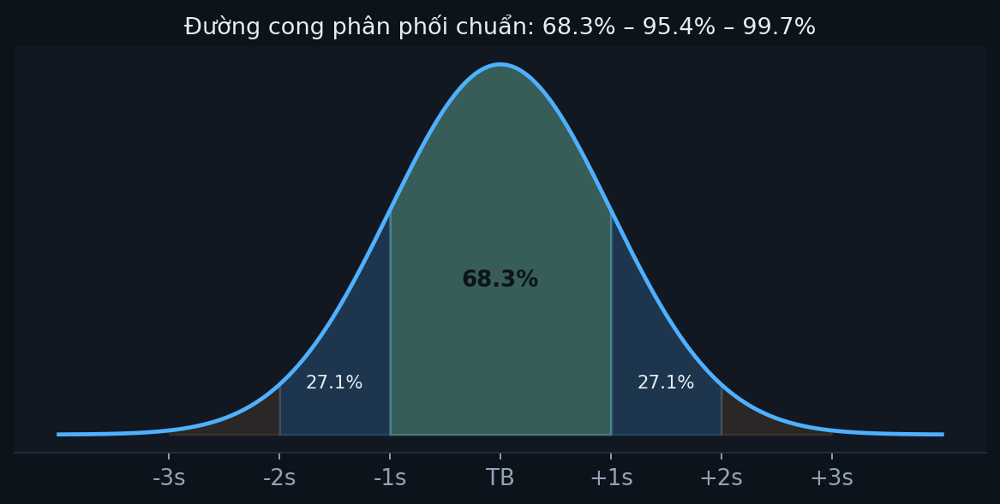

Xin lưu ý: nội dung trên trang này phần lớn do AI tạo ra. Người phụ trách không có đủ thời gian và nguồn lực để tự soạn thảo toàn bộ tài liệu khoá học ở mức hoàn thiện mong muốn, nên đã dùng AI để dựng nội dung, sau đó kiểm tra lại số liệu và đối chiếu với giáo trình gốc trong khả năng cho phép. Nếu phát hiện sai sót, rất mong được góp ý.
MODULE VKL 7-10 · PHỤ LỤC RIÊNG CHO KHÁNH LINH
Phân phối chuẩn nâng cao & Ước lượng tham số
Gom lại đúng 2 chỗ Linh nhắn hỏi: "đặc điểm tiếp theo của phân phối chuẩn" và "thống kê tham số" — từ 2 tài liệu Linh gửi.
← → để chuyển slide.
PHẦN 1/5
01
Phân phối chuẩn — 2 đặc điểm còn lại
Chuyển đổi Z-score — vì sao cần
Diện tích dưới đường cong = xác suất
Bảng độ-lệch-chuẩn ↔ xác suất
Tính tay 1 ví dụ đầy đủ
1 · Nhắc lại
3 đặc điểm Linh đã học trước đó
Đối xứng (TB=Trung vị=Mode) · Đỉnh ở giữa, 2 đuôi vô hạn · Hình dạng phụ thuộc μ (vị trí) và σ (độ nhọn/trải rộng).
2 · Đặc điểm 4
Mọi phân phối chuẩn đổi được về N(0,1)
Z = (X − μ) / σ
Dù μ, σ là số gì, sau khi đổi sang Z luôn về ĐÚNG 1 đường cong duy nhất — không cần bảng tra riêng cho từng phân phối.
Tính tay
Điểm thi 85, μ=70, σ=10 → Z=1,5
Z=(85−70)/10=1,5 — bạn này cao hơn trung bình đúng 1,5 độ lệch chuẩn, BẤT KỂ thang điểm gốc là gì.
3 · Đặc điểm 5
Diện tích dưới đường cong = Xác suất

Diện tích giữa 2 điểm = xác suất biến ngẫu nhiên rơi vào khoảng đó.
Bảng cốt lõi
Độ lệch chuẩn ↔ Xác suất (diện tích)
Khoảng
Xác suất
±1σ
68,26%
±1,96σ
95%
±2,58σ
99%
±3σ
99,73%
Cầu nối
Số "1,96" trong CI 95% lấy từ ĐÂY
Khoảng tin cậy 95% = TB ± 1,96×SE — con số 1,96 chính là dòng "95%" trong bảng vừa học, không phải số tự nhiên bịa ra.
PHẦN 2/5
02
Phân phối nhị thức & quan hệ với phân phối chuẩn
Định nghĩa: chỉ 2 kết quả (Bernoulli)
Khi n lớn → xấp xỉ phân phối chuẩn
Kiểm chứng bằng số thật
4 · Định nghĩa
Biến ngẫu nhiên RỜI RẠC, chỉ 2 kết quả
Đậu/Rớt, Đạt/Không đạt tiêu chuẩn, Sấp/Ngửa — mọi thí nghiệm "chỉ 2 khả năng" đều tuân theo phân phối nhị thức (Bernoulli).
5 · Quan hệ với chuẩn
n càng lớn, nhị thức càng GIỐNG phân phối chuẩn
Khi số lần thử tăng tới vô cùng, phân phối giới hạn của nhị thức CHÍNH LÀ phân phối chuẩn — dùng xấp xỉ chuẩn để tính xác suất nhị thức, đỡ phải tính tổ hợp phức tạp.
Kiểm chứng số thật
n=20, p=0,5: xấp xỉ sai khác chỉ 0,05%
Cách tính P(X≥12)
Kết quả
Nhị thức CHÍNH XÁC
0,2517
Xấp xỉ chuẩn (μ=10, σ=2,236)
0,2512
Đã verify bằng Python (scipy) — 2 cách tính lệch nhau chưa tới 0,001, xấp xỉ rất tốt khi np≥5 và n(1−p)≥5.
PHẦN 3/5
03
Ước lượng điểm & Ước lượng khoảng
2 cách "đoán" tham số tổng thể từ mẫu
Vì sao ước lượng khoảng được ưu tiên
Công thức khoảng tin cậy
6 · Ước lượng điểm
Đưa ra ĐÚNG MỘT con số
Ví dụ: "chiều cao TB học sinh = 165cm". Nhược điểm: không biết con số này có thể sai lệch bao nhiêu.
7 · Ước lượng khoảng
Đưa ra MỘT KHOẢNG kèm độ tin cậy
"Tin 95% rằng TB nằm trong [162cm, 168cm]"
Tự nói luôn "tôi có thể sai bao nhiêu" — đây là lý do được ưu tiên trong thực tế hơn ước lượng điểm.
Công thức
CI = Ước lượng điểm ± (Giá trị tới hạn × Sai số chuẩn)
Ký hiệu
Ý nghĩa
Ước lượng điểm
x̄ (trung bình mẫu)
Giá trị tới hạn
1,96 (ứng mức tin cậy 95%)
Sai số chuẩn (SE)
Đo độ "dao động" của ước lượng giữa các mẫu
PHẦN 4/5
04
Mức ý nghĩa & 4 tiêu chí "ước lượng tốt"
α và 1−α liên hệ thế nào
Không chệch, Hiệu quả, Nhất quán, Đầy đủ
Ví dụ: vì sao chia n−1 chứ không phải n
8 · Mức ý nghĩa α
α = xác suất BẠN SAI khi nói tham số nằm trong CI
Độ tin cậy 0,99 ⟺ mức ý nghĩa α=1−0,99=0,01 — hai cách nói về CÙNG một khoảng tin cậy.
9 · Không chệch
x̄ không chệch — nhưng SD chia n lại CHỆCH
Lấy trung bình của VÔ SỐ lần ước lượng lặp lại phải đúng bằng giá trị thật. x̄ đạt điều này; s² phải chia (n−1), không phải n, mới hết chệch.
10 · Hiệu quả
Trong các ước lượng KHÔNG CHỆCH, chọn cái dao động ÍT nhất
x̄ thường hiệu quả hơn trung vị/mode để ước lượng giá trị trung tâm — ít "nhảy" giữa các mẫu khác nhau hơn.
11 · Nhất quán
n → ∞, ước lượng tiến SÁT giá trị thật
Mẫu càng lớn, càng đoán chuẩn — không có chuyện mẫu to mà vẫn sai tùm lum.
12 · Đầy đủ
Có dùng HẾT thông tin từ mọi quan sát không?
x̄ dùng hết mọi điểm số → đầy đủ. Mode (chỉ nhìn giá trị xuất hiện nhiều nhất) bỏ qua phần lớn thông tin → kém đầy đủ hơn.
PHẦN 5/5
05
Ráp lại toàn bộ & thực hành nhanh
3 mảnh nối vào nhau theo đúng thứ tự nào
Thực hành PSPP tính CI thật
Tiếp theo
Ráp lại
3 mảnh kiến thức nối thẳng vào nhau
Phân phối chuẩn hoá (Phần 1) → cho công thức xác suất chuẩn (Z, 1,96) → DÙNG để xây khoảng tin cậy (Phần 3) → chỉ đáng tin nếu ước lượng điểm đứng sau là ước lượng TỐT (Phần 4).
Thực hành
PSPP: DESCRIPTIVES cho ra CI 95% luôn
Analyze → Descriptive Statistics → Explore → tích "Descriptives" sẽ in kèm khoảng tin cậy 95% của trung bình — không cần tính tay.
Tiếp theo
Đọc sâu bên dưới, rồi tự kiểm tra
Slide chỉ tóm tắt. Toàn bộ công thức, ví dụ tính tay, và đối chiếu 2 tài liệu gốc nằm bên dưới.
Module VKL 7-10 · Phân phối chuẩn nâng cao & Ước lượng tham số
Module phụ lục, soạn RIÊNG cho Vũ Khánh Linh — gom lại đúng 2 chỗ Linh nhắn hỏi trực tiếp ("đảo chiều nhân quả" đã trả lời và đưa vào Từ điển; "đặc điểm tiếp theo của phân phối chuẩn" và "thống kê tham số" được viết đầy đủ ở đây), dựa trên 2 tài liệu Linh gửi: 正态分布与二项分布 (Phân phối chuẩn & nhị thức) và 基本概念 (Khái niệm cơ bản — ước lượng tham số). Không nằm trong 12 module chính của khoá SPSS, chỉ dùng để ôn riêng.
Slide trước (tài liệu Linh gửi) đã học 3 đặc điểm: đối xứng (TB=Trung vị=Mode), đỉnh ở giữa với 2 đuôi kéo dài vô hạn, và hình dạng phụ thuộc μ (vị trí) + σ (độ nhọn/trải rộng). Hai đặc điểm "tiếp theo" slide ghi mà Linh hỏi chính là:
Đặc điểm 4 — Chuyển đổi sang phân phối chuẩn hoá (Z-score)
Mọi phân phối chuẩn bất kỳ (dù μ và σ là số gì) đều đổi được về CÙNG MỘT phân phối chuẩn duy nhất gọi là phân phối chuẩn tiêu chuẩn N(0,1) — tức μ=0, σ=1.
Công thức điểm Z
Z = (X − μ) / σ
Xgiá trị quan sát cụ thể cần chuẩn hoá
μtrung bình của phân phối gốc
σđộ lệch chuẩn của phân phối gốc
Zsố ĐỘ LỆCH CHUẨN mà X cách trung bình — không còn đơn vị gốc, so sánh được giữa mọi phân phối
Vì sao cần bước này? Vì có VÔ SỐ phân phối chuẩn khác nhau (mỗi μ, σ khác nhau là một đường cong khác) — không thể lập sẵn bảng tra xác suất cho từng cái. Nhưng sau khi đổi về Z, TẤT CẢ đều quy về đúng 1 đường cong N(0,1) duy nhất → chỉ cần 1 bảng tra Z (bảng "正态分布表" trong tài liệu Linh gửi) là áp dụng được cho mọi bài toán.
Ngành
Ví dụ tính Z
Diễn giải
Giáo dục
Điểm thi 85, μ=70, σ=10 → Z=(85−70)/10=1,5
Cao hơn trung bình 1,5 độ lệch chuẩn
Y tế (minh hoạ)
Chiều cao bé 110cm, μ=105cm, σ=5cm → Z=1,0
Cao hơn trung bình nhóm tuổi đúng 1 độ lệch chuẩn — bác sĩ dùng Z-score này để vẽ biểu đồ tăng trưởng trẻ em thật
Công nghiệp (minh hoạ)
Tuổi thọ bóng đèn 900 giờ, μ=1000, σ=50 → Z=−2,0
Thấp hơn trung bình 2 độ lệch chuẩn — thuộc nhóm bóng đèn kém bền nhất
Đặc điểm 5 — Tổng diện tích dưới đường cong bằng 1
Đường cong phân phối chuẩn: diện tích dưới toàn bộ đường cong = 1 (100% xác suất).
Tổng diện tích bên dưới đường cong phân phối chuẩn luôn bằng 1 (tương ứng tổng xác suất mọi biến cố = 1). Quan trọng nhất: diện tích giữa 2 điểm hoành độ bất kỳ = xác suất biến ngẫu nhiên rơi vào khoảng đó.
Khoảng (quanh trung bình)
Xác suất (diện tích)
−1σ đến +1σ
68,26%
−1,96σ đến +1,96σ
95%
−2,58σ đến +2,58σ
99%
−3σ đến +3σ
99,73%
Cầu nối quan trọng nhất của cả module: số "1,96" xuất hiện trong công thức khoảng tin cậy 95% (CI95% = x̄ ± 1,96×SE) KHÔNG phải một con số bịa ra — nó CHÍNH LÀ dòng "95%" trong bảng này. Đây là lý do học phân phối chuẩn TRƯỚC khi học khoảng tin cậy — hai bài không tách rời nhau.
Ví dụ: lớp 100 học sinh, μ=70, σ=10 → khoảng [60,80] (±1σ) chứa khoảng 68 bạn; khoảng [50,90] (≈±2σ) chứa khoảng 95 bạn.
2. Phân phối nhị thức (Bernoulli) & quan hệ với phân phối chuẩn
Phân phối nhị thức là phân phối xác suất của biến ngẫu nhiên RỜI RẠC, mô tả thí nghiệm chỉ có HAI kết quả khác nhau về bản chất.
Ngành
Ví dụ 2 kết quả
Giáo dục
Đậu / Rớt một bài thi
Công nghiệp
Sản phẩm Đạt tiêu chuẩn / Không đạt
Y tế (minh hoạ)
Bệnh nhân Khỏi / Không khỏi sau điều trị
Xác suất cơ bản
Tung đồng xu ra Sấp / Ngửa
Đặc điểm quan trọng nhất: phân phối GIỚI HẠN của phân phối nhị thức khi số lần thí nghiệm tăng tới VÔ CÙNG chính là phân phối chuẩn. Do đó khi số lần lặp đủ lớn, có thể dùng xấp xỉ phân phối chuẩn để tính xác suất nhị thức, đơn giản hoá rất nhiều phép tính tổ hợp phức tạp.
Kiểm chứng bằng số thật (đã verify bằng Python/scipy): với n=20 lần thử, p=0,5 mỗi lần — tính xác suất có ít nhất 12 lần "thành công":
Cách tính P(X≥12)
Kết quả
Nhị thức CHÍNH XÁC (scipy.stats.binom)
0,2517
Xấp xỉ chuẩn (μ=np=10, σ=√[np(1−p)]=2,236)
0,2512
Hai cách tính lệch nhau chưa tới 0,001 — xấp xỉ xuất sắc. Quy tắc thực hành: xấp xỉ chuẩn đáng tin khi np≥5 VÀ n(1−p)≥5 (ở đây np=10, n(1−p)=10, đều đạt).
3. Ước lượng tham số: Ước lượng điểm vs Ước lượng khoảng
Đây là nội dung tài liệu 基本概念 (Khái niệm cơ bản). Dùng số liệu MẪU để đoán (ước lượng) con số THẬT của TỔNG THỂ — và làm sao biết cách đoán đó có "tốt" hay không.
Kiểu ước lượng
Kết quả trả về
Ví dụ
Nhược điểm
Ước lượng điểm (point estimation)
ĐÚNG MỘT con số
"Chiều cao TB = 165cm"
Không biết sai lệch bao nhiêu
Ước lượng khoảng (interval estimation)
MỘT KHOẢNG + độ tin cậy
"Tin 95% rằng TB nằm trong [162cm, 168cm]"
Khoảng có thể khá rộng nếu mẫu nhỏ
Khoảng tin cậy (Confidence Interval)
CI = Ước lượng điểm ± (Giá trị tới hạn × Sai số chuẩn)
Ước lượng điểmthường là trung bình mẫu x̄
Giá trị tới hạnlấy từ bảng Z (Phần 1) — 1,96 cho độ tin cậy 95%
Sai số chuẩn (SE)đo độ "dao động" của ước lượng giữa các mẫu khác nhau — SE càng nhỏ, CI càng hẹp (chính xác hơn)
Nguyên tắc tổng quát (theo đúng slide gốc): ước lượng khoảng dựa trên LÝ THUYẾT PHÂN PHỐI MẪU — dùng sai số chuẩn của phân phối mẫu để tính ĐỘ DÀI khoảng, và chính quy luật phân phối mẫu (Z, t...) mới cho phép giải thích XÁC SUẤT tham số tổng thể rơi vào khoảng đó. Hai yếu tố quan trọng nhất: (1) Sai số chuẩn — quyết định chiều rộng; (2) Phân phối mẫu — cung cấp cơ sở tính xác suất.
Với cùng cỡ mẫu, ĐỘ DÀI khoảng ước lượng và XÁC SUẤT ước lượng đúng là một cặp ĐÁNH ĐỔI — muốn khoảng hẹp hơn (chính xác hơn) ở CÙNG cỡ mẫu thì phải chấp nhận độ tin cậy thấp hơn, và ngược lại.
4. Mức ý nghĩa (α) & 4 tiêu chí "ước lượng tốt"
Mức ý nghĩa α là xác suất BẠN CÓ THỂ SAI khi nói tham số tổng thể nằm trong khoảng tin cậy đã tính. Độ tin cậy 1−α và mức ý nghĩa α LUÔN đi cùng nhau:
Độ tin cậy (1−α)
Mức ý nghĩa (α)
0,95 (95%)
0,05
0,99 (99%)
0,01
"Khoảng tin cậy với độ tin cậy 0,99" và "khoảng tin cậy với mức ý nghĩa 0,01" là HAI CÁCH NÓI tương đương của CÙNG MỘT khoảng.
Slide gốc liệt kê 4 tiêu chí "良好估计量" (ước lượng tốt) nhưng không giải thích rõ — đây là phần Linh chắc chắn bị rối, nên viết đầy đủ:
Tiêu chí
Ý nghĩa
Ví dụ tính tay
Không chệch (unbiased)
Lấy TB của vô số lần ước lượng lặp lại = giá trị thật
x̄ không chệch với μ. Nhưng s²=Σ(xᵢ−x̄)²/n lại CHỆCH — phải chia (n−1), không phải n, mới hết chệch (hiệu chỉnh Bessel, đúng công thức Module 03 của khoá SPSS)
Hiệu quả (efficient)
Trong các ước lượng KHÔNG CHỆCH, chọn cái có phương sai (độ dao động) NHỎ NHẤT
x̄ thường hiệu quả hơn trung vị/mode để ước lượng giá trị trung tâm — dao động ít hơn giữa các mẫu khác nhau
Nhất quán (consistent)
Khi n→∞, ước lượng tiến SÁT giá trị thật
Mẫu 10.000 người luôn đáng tin hơn mẫu 10 người, với CÙNG phương pháp lấy mẫu
Đầy đủ (sufficient)
Có dùng HẾT thông tin từ mọi quan sát trong mẫu không
x̄ dùng hết mọi điểm số → đầy đủ. Mode (chỉ nhìn giá trị xuất hiện nhiều nhất) bỏ qua phần lớn thông tin các điểm số khác → kém đầy đủ hơn
Ví dụ ngành khác — minh hoạ cho dễ nhớ 4 tiêu chí: đo cân nặng bằng CÂN đã HIỆU CHỈNH đúng nhiều lần (không chệch), dùng cân ĐIỆN TỬ thay vì cân LÒ XO rẻ tiền (hiệu quả hơn — ít sai số ngẫu nhiên), cân CÀNG NHIỀU lần đo trung bình lại thì số liệu càng đáng tin (nhất quán), và ghi lại TOÀN BỘ số lần cân thay vì chỉ ghi "lần cân cao nhất" (đầy đủ).
5. Thực hành nhanh — PSPP tự tính khoảng tin cậy
🖱️ Không cần tính tay — PSPP/SPSS tự in ra CI95%:
Analyze → Descriptive Statistics → Explore...
Đưa biến cần ước lượng vào ô Dependent List.
Bấm Statistics... → tích Descriptives (mặc định đã tích CI 95%, có thể đổi % ở đây) → Continue → OK.
Đọc bảng "Descriptives": dòng "95% Confidence Interval for Mean" cho luôn cả cận dưới và cận trên.
EXAMINE VARIABLES=diem_thi /STATISTICS=DESCRIPTIVES /CINTERVAL 95.
* PSPP hỗ trợ đầy đủ EXAMINE với /CINTERVAL để đổi mức tin cậy.
📜 Nguồn tài liệu
Nội dung module này tổng hợp từ 2 slide bài giảng Linh gửi: 正态分布与二项分布 (phần "Ðặc điểm tiếp theo của phân phối chuẩn" — mục 4,5 — và phần phân phối nhị thức) và 基本概念 (phần ước lượng điểm/khoảng, mức ý nghĩa, 4 tiêu chí ước lượng tốt). Mọi số liệu tính tay/xấp xỉ trong bài đã được verify bằng Python (scipy.stats) trước khi đưa vào — không có số nào đoán hay gõ tay.
6. Tự kiểm tra
ℹ️ Thông tin về trang & liên hệ góp ý
🤖 Nội dung AI hỗ trợ soạn thảo
Phần lớn nội dung trên toàn bộ website này — giải thích khái niệm, câu hỏi tự kiểm tra, một số sơ đồ minh hoạ — được soạn với sự hỗ trợ của AI, sau đó người phụ trách kiểm tra lại trong khả năng cho phép (đối chiếu số liệu với dữ liệu thật, đối chiếu khái niệm với giáo trình gốc). Vì khối lượng nội dung lớn và thời gian có hạn, không thể đảm bảo mọi câu chữ đều đã được rà soát kỹ. Nếu phát hiện sai sót ở bất kỳ đâu, rất mong nhận được góp ý theo thông tin liên hệ bên dưới.
Nội dung bám theo sách Research Methods in Education (Cohen, Manion & Morrison, ấn bản 8, Routledge 2018). Vì lý do bản quyền, trang này không đính kèm file sách — ai cần bản PDF để tự đọc thêm ngoài bài giảng có thể tìm qua một số kênh không chính thống, ví dụ:
Lưu ý: các trang trên hay đổi tên miền hoặc bị chặn — nếu link nào không vào được, xin tự tìm tên miền mới của cùng dịch vụ.
🤝 Muốn đóng góp, hoặc xin tài liệu để tự dạy?
Rất hoan nghênh! Nếu bạn muốn giúp cải thiện học liệu (sửa lỗi, viết thêm module, dịch thuật...), hoặc muốn xin lại toàn bộ/một phần tài liệu này để tự dạy cho môn học khác của riêng bạn (không giới hạn ở SPSS/Khoa học Xã hội) — cứ thoải mái liên hệ:
Gửi email mô tả bạn muốn làm gì / cần gì, kèm link GitHub cá nhân nếu muốn được thêm quyền cộng tác trực tiếp vào project.